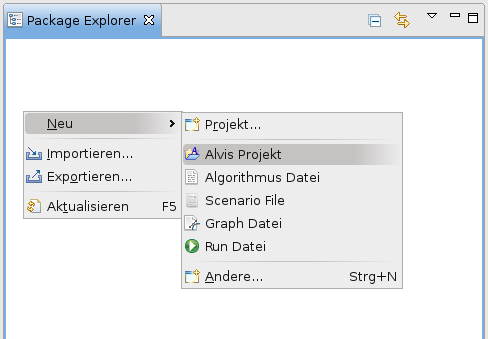
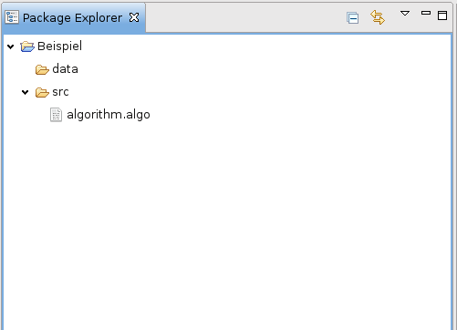
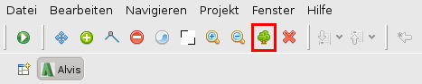

Erste Schritte
Der Sinn und Zweck von Alvis ist es, mit Allem, was bezüglich Algorithmen in der Informatik vorkommt, experimentieren zu können, um vermitteltes Wissen zu vertiefen.
Dazu kann man bestehende Algorithmen verändern oder ganz eigene schreiben.
Um überhaupt mit etwas arbeiten zu können, muss man zuerst einmal ein neues Alvis Projekt anlegen. Hierzu klickt man im Package Explorer rechts -> Neu -> Alvis Projekt

Es erscheint der Alvis Projekt-Wizard. Wir nennen das Projekt "Beispiel" und klicken auf Fertigstellen. Automatisch wird das Beispiel mit den beiden Ordnern "src" und "data" angelegt. In "src" liegt nun schon eine leere
Algorithmus-Datei. Wir klappen also "Beispiel" und "src" per Doppelklick auf, der Package Explorer sieht dann so aus:

Nun klicken wir doppelt auf algorithm.algo. Es öffnet sich der leere Algorithmus-Editor. Wir fügen folgenden Algorithmus einer Breitentraversierung ein:
main(Graph G, Vertex s) begin
for Vertex v in G.vertices: begin
v.color = "white",
v.distance = infty,
v.parentId = null,
end
s.color = "grey";
s.distance = 0,
Vertex Queue Q,
Q.enqueue(s),
while ! Q.isEmpty(): begin
Vertex u,
u = Q.dequeue(),
for Vertex v in u.adjacents:
if v.color == "white": begin
v.color = "grey";
v.distance = u.distance + 1,
v.parentId = u,
Q.enqueue(v),
end
end
end
Wie man sieht, werden alle Schlüsselworte direkt farbig markiert.
Zur Ausführung eines Algorithmus braucht man aber nicht nur den Algorithmus selbst, sondern auch ein Beispiel, auf das er angewendet wird. Wir wollen hierzu einen zufällig erzeugten Graphen nehmen.
Im Package Explorer klicken wir rechts auf data -> Neu -> Graph Datei

Ein ähnlicher Wizard wie für das Projekt erscheint. Wir nennen den Graphen "BeispielGraph" und klicken auf "Fertigstellen". Es öffnet sich der Editor für Graphen.
Wir wollen uns nicht lange mit der Erstellen eines Graphen beschäftigen (dies wird in der Hilfe für Graphen erklärt), sondern schnell einen zufälligen erzeugen. Dazu klicken wir auf das kleine Baum-Symbol.

Es erscheint der Wizard, mit dem man einen neuen, zufälligen Graphen erstellt.

Wir lassen die Werte auf ihren Standardeinstellungen und fahren mit einem Klick auf "OK" fort. Ein zufälliger Baum erscheint im Graph-Editor.
Nun haben wir einen Algorithmus und ein Beispiel, auf den wir ihn anwenden können. Um den Algorithmus zu testen klicken wir auf das kleine Play-Symbol oben links.

Eventuelle Nachfragen, ob veränderte Dateien gespeichert werden sollen, bestätigen wir. Im folgenden Dialog klappen wir die Verzeichnisse "src" und "data" auf und klicken mit gedrückter Strg-Taste auf unser Beispiel und unseren Algorithmus.

Nach einem Klick auf "OK" startet der Ablauf, auch Run genannt. Wie man diesen genau steuert, erfährt man in Der Ablauf. Wenn wir nun auf den blauen Play-Button  klicken, startet der Algorithmus. Mit den anderen beiden Buttons lassen wir ihn vor- und zurücklaufen. Standardmäßig ist Alvis so eingestellt, dass er zufällig wählt, welcher der Startknoten ist und in welcher Reihenfolge die Knoten abgearbeitet werden. Um dies zu beeinflussen, muss ein so genanntes Run File angelegt werden.
klicken, startet der Algorithmus. Mit den anderen beiden Buttons lassen wir ihn vor- und zurücklaufen. Standardmäßig ist Alvis so eingestellt, dass er zufällig wählt, welcher der Startknoten ist und in welcher Reihenfolge die Knoten abgearbeitet werden. Um dies zu beeinflussen, muss ein so genanntes Run File angelegt werden.
Herzlichen Glückwunsch, sie haben ihre ersten Schritte mit Alvis gemacht!